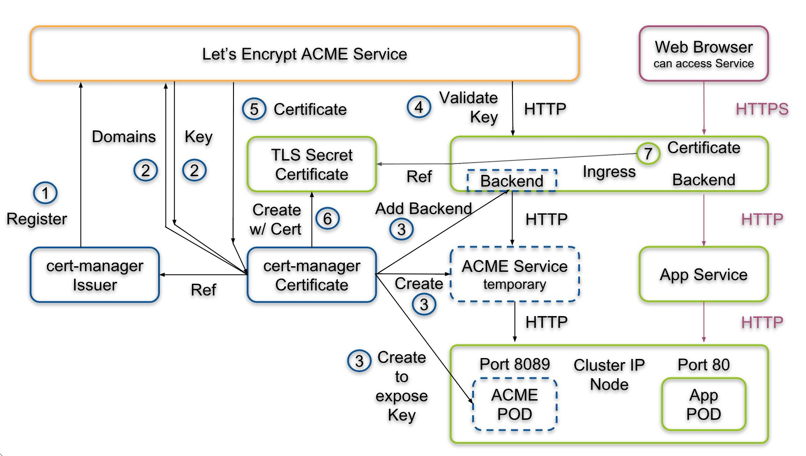

1.6 Utiliser notre autorité avec cert-manager¶
Venons en à l'élement central de notre stack, cert-manager. Il va nous permettre de créer des certificats pour nos services kubernetes.
Cert-manager permet d'utiliser les protocoles acme embarqué dans des outils comme Pebble. Il permet de créer des certificats pour des services http, dns et mTLS. On l'utilisera avec Pebble pour distribuer les certificats vers les ingress avec des ressources secrets contenant respectivement le certificat et la clé de déchiffrage.
Pour résumer en schéma :

Tout d'abord on ajoute les variables et puis des constantes dans le fichier vars.yml que l'on utilise dans un souci de clarté :
Voici donc des constantes que l'on n'a probablement jamais avoir besoin de changer (toutefois on pourrait le faire si besoin avec un set_fact, mais ce n'est pas très propre)
letsencrypt_stagingetletsencrypt_prodsont anticipé pour l'utilisation de cert-manager sur un cloud.
letsencrypt_envs_ca_certsest l'url que l'on ajoutera dans les containers pour activer tls entre eux sur un environnement de test en ligne.
Les défauts qui utilise les variables prédéfinie précédemment :
Que l'on surcharge tout de suite dans le playbook converge.yml :
| playbook/roles/kubeapps/molecule/default/converge.yml | |
|---|---|
cert_manager_acme_urldoit toujours utilisé l'entrée dns que l'on a choisie juste avant et qui est par défautacme.k3s.local. un nom d'hôte que l'on a choisi pour l'usage local de cert-manager.WARN Attention en production ou recette l'adresse email
cert_manager_emaildoit appartenir à un domaine valide (gmail, hotmail, etc...)
Nous introduisons enfin la variable cert_manager_is_internal qui nous permet de savoir si nous utilisons un Acme spécial autre celui que le Lets-encrypt de production. Effectivement les acme locaux et staging ne sont pas référencés comme digne de confiance sur l'internet global.
| playbook/roles/kubeapps/defaults/main.yml | |
|---|---|
L'idée est que si un url fournissant un certificat est donné avec
cert_manager_staging_ca_cert_urlalors on considère que l'on est dans un environnement utilisant un Lets-encrypt de test ou recette.
Mettons en place une bonne pratique¶
L'objectif est d'éviter du comportement non souhaité lors de l'utilisation de cert-manager et donc de ne pas lancer l'installation de la suite des tâches s'il manque certaine configuration. Cert-manager est un composant cœur dans notre stack car il distribue les certificats pour certain service embarquant des protocoles d'authentification. Nous ne pourrons pas utiliser ces services s'il n'y a pas de certificats et de cryptage des échanges en TLS (v1.2+).
On crée donc un fichier check.yml dans le dossier tasks/ de notre rôle pour vérifier les configurations.
Ici on veut être sûr que l'email est renseigné sinon lets-encrypt ne donnera pas de certificat. Enfin on veut dans le cas d'un Acme de recette / test qu'un fichier de certificat d'autorité (CA) soit présent dans le système.
Les checks du fichier de certificat prendrons plus sens à la prochaine étape quand on mettra en place trust-manager dans le cluster.
Puis on active ceci en premier dans le fichier wrapper main.yml :
Et maintenant qu'on a un check sur l'email on l'ajoute dans le converge :
| playbook/roles/kubeapps/molecule/default/converge.yml | |
|---|---|
Puis on installe cert-manager avec le module helm chart de k3s.
installCRDs: true permet de rendre disponible des nouveaux types de manifests propre à l'outil, voici la commande pour vérifier qu'ils sont bien installés :
kubectl get crd
# Give
orders.acme.cert-manager.io
certificates.cert-manager.io
certificaterequests.cert-manager.io
challenges.acme.cert-manager.io
clusterissuers.cert-manager.io
issuers.cert-manager.io
Ensuite créeons notre issuer qui va s'occuper de tout le cycle de vie d'un certificat demandé par un ingress au travers de l'annotation.
Voici le manifest de l'issuer de type acme
Note il existe d'autres types d'issuer pour d'autres protocoles comme vault pki, ca, etc...
Note Vu que l'on passe par l'ingress pour injecter les point d'accès du challenge acme, il faut bien configuré l'issuer avec la bonne classe d'ingress.
Note kind:
ClusterIssuerpermet de créer un issuer qui sera disponible dans tout le cluster. À l'inverse unIssuerest disponible dans un seul namespace.
Nous voilà prêt il ne reste que à appeler la création du manifest dans notre fichier wrapper main.yml :
| playbook/roles/kubeapps/tasks/main.yml | |
|---|---|
Tout cela ne va cependant pas être suffisant dans le cas du mTLS car on va avoir besoin de faire confiance à notre autorité de certification.
On peut maintenant tester le bon fonctionnement de cert-manager et aussi la partie précédente sur coredns avec molecule test